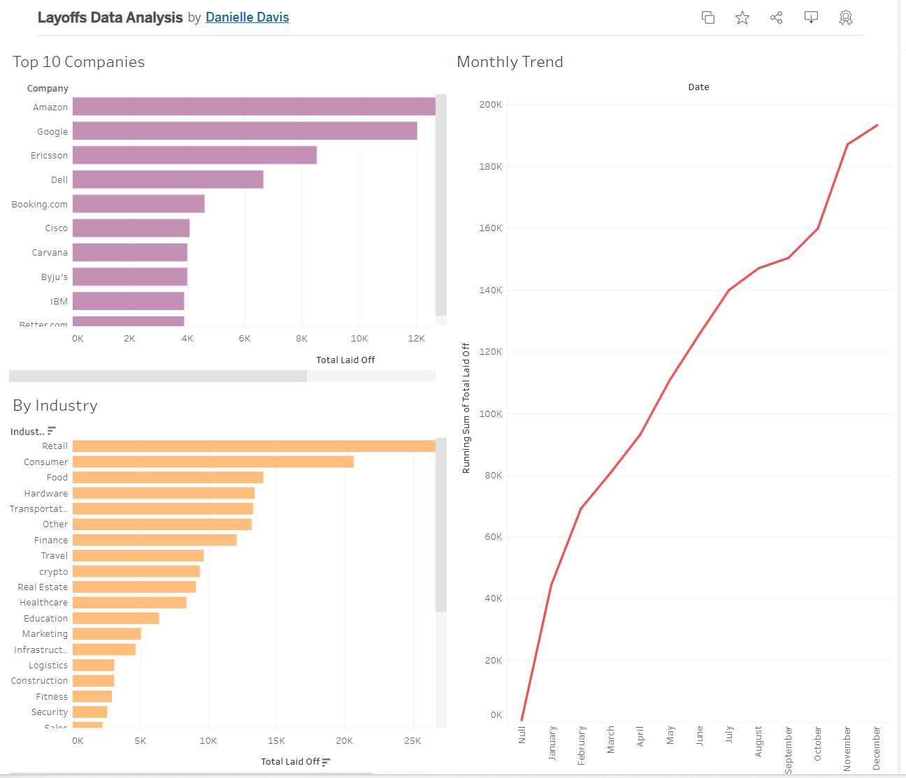

Company Layoffs: SQL Analysis & Tableau Dashboard
End-to-end data project: Cleaned 2,000+ rows of layoff data using SQL (removing duplicates, standardizing formats, handling nulls), then created an interactive Tableau dashboard visualizing trends across industries, companies, and time periods.
SQL
MySQL
Tableau
Data Cleaning
Data Visualization